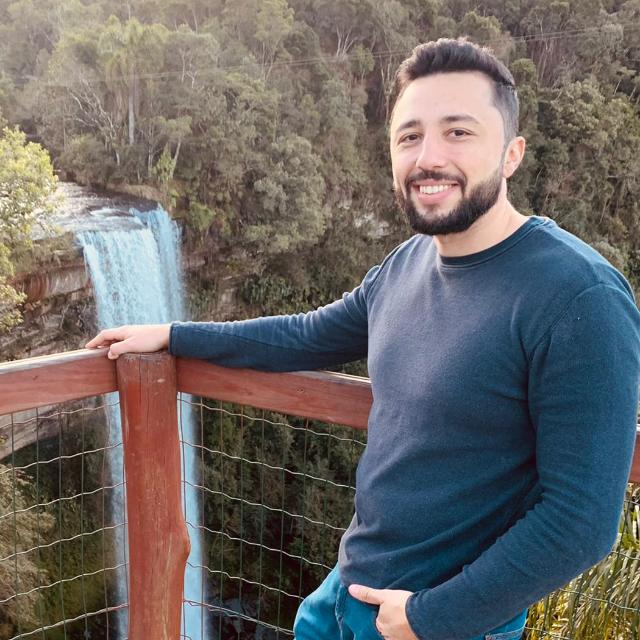

Sobre mim

Giovanni Block Murcheski, um entusiasta da programação. Atualmente, estou desenvolvendo minhas habilidades em desenvolvimento web, com foco em HTML, CSS e JavaScript.
Também atuo na área da Radiologia, onde já tenho mais de 5 anos de experiência como Técnico de Raio-X. Estou em constante aprendizado e busco unir meus conhecimentos em tecnologia com minha experiência profissional para crescer ainda mais na carreira.